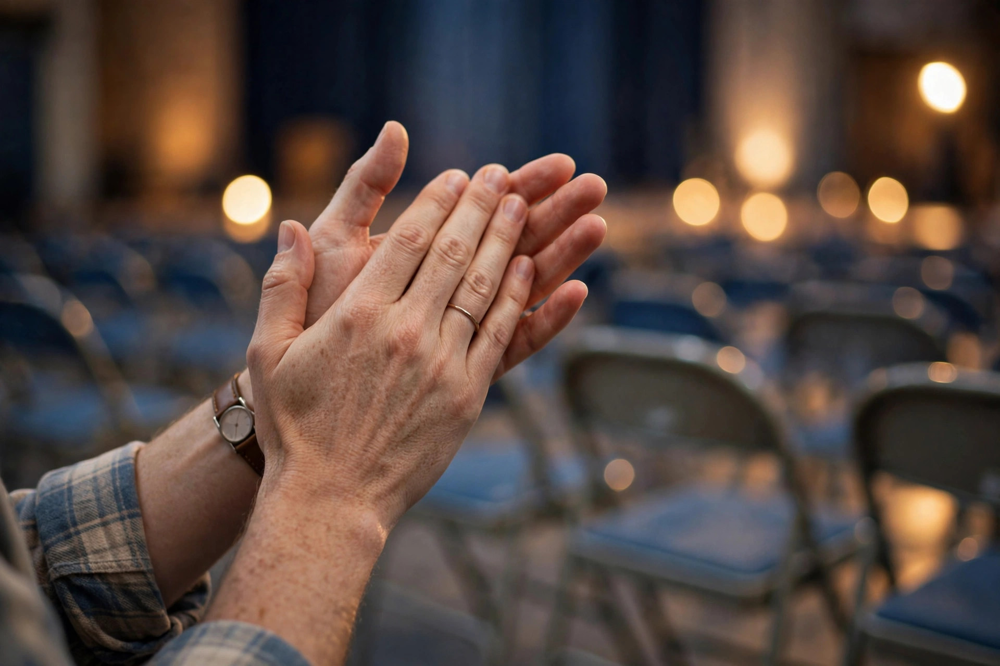

Applause timing: how to clap like you were awake the whole time

Here is the dirty secret of every stay-awake guide on the internet: they were written for students. The standard advice — change position, sip water, chew gum — assumes you are in a lecture hall with a transcript on the line. You are in a gymnasium at 7:40 p.m., your kid is in the third row of the choir, and your eyelids have declared independence. Student tactics will not save you. Applause will.
Applause is the tired parent's best camouflage, and it works for three beautiful reasons. First, clapping is loud: a good burst of it covers any embarrassing sleep sounds you may have been making. Second, it is physical: the sudden arm movement jolts you one full level of alertness upward, like a free reset button. Third — and this is the real magic — applause makes you look engaged. Nobody ever looked at a parent mid-thunderous-clap and thought, "that person was asleep thirty seconds ago." Master the timing, and you can convert an entire nap into a standing reputation as the most enthusiastic parent in the room.
The clap types, matched to the nap cycle
Not all applause is equal. Different depths of drowsiness call for different claps. Run this drill at the next event:
- The attentive pat (baseline alertness). Gentle, rhythmic clapping at medium volume, used after every act or speech segment. This is your default setting. Keep the rhythm steady — it signals calm appreciation and requires almost no energy.
- The rally clap (drifting, but recoverable). The moment you feel yourself sliding, clap harder and faster than everyone around you for ten seconds. The burst of noise and movement yanks you back to the surface. Nobody questions enthusiasm; they only question silence.
- The standing ovation (nuclear option). Stand up, clap over your head, add a whoop if your kid is on stage. Deploy at most once per evening. A well-timed standing ovation resets your body completely and guarantees your kid saw you standing for them. This is the single highest-value move in the entire stealth-nap playbook.
What success looks like: you surface from every applause break one level more awake than you went in, and the parents around you describe you as "so supportive." If anyone asks whether you enjoyed it, you can honestly say the applause was the best part.
Reading the room: when applause is about to break
The difference between looking alert and looking startled is about four seconds of warning. Watch for the telltale signs: the music teacher's arms dropping to their sides, the host stepping toward the microphone, a sudden rustle as three hundred programs flip at once, or that specific intake of breath an audience takes right before clapping. The choir straightening its posture is your final alarm. When you see two of these signs together, bring your hands up to clapping position now — ready beats fast every time.
The clap decision chart
Your kid's segment just ended and you have three seconds to decide. Consult the chart:
- You are fully awake and it was great → full-volume rally clap, big smile, eye contact with your kid.
- You drifted through most of it but caught the ending → enthusiastic clapping at the pace of the person next to you. Mirror their rhythm; crowds forgive followers.
- You woke up during the applause → join in immediately at double speed. Late clapping still counts as clapping. Keep your eyes open this time.
- It is someone else's kid and you are barely conscious → the attentive pat. Polite, brief, dignified. Save your energy.
- The whole gym stands up → stand. Always stand. Whatever happened, it was apparently amazing.
The intermission reset
Intermission is the one sanctioned wake-up window of the evening, so use it like a professional. Stand up and move (the classic advice about changing position and sipping water exists for a reason), visit the washroom, splash water on your face if you are bold, and chew something strong-flavored on the way back in. Arrive back at your seat thirty seconds before the lights dim, looking refreshed and committed. Second acts are where naps go to get ambitious, so enter this one armed.
What NOT to clap for
A few hazards for the applause-reliant: do not clap between movements of a piece (the music parents will notice), do not start the applause yourself unless you are very sure the performance is over, and never — ever — clap rhythmically during a moment of silence. That one is reserved for people who are fully awake and making a choice. Also, keep your phone in your pocket during applause; filming while clapping is how phones end up on gymnasium floors.
The honest footnote, as always: all of this applause choreography is a fancy way of saying you showed up exhausted and you are doing your best anyway. Your kid will remember the standing ovation — the one real one, for them — far longer than they will remember anything about your eyelids. And when the evening finally ends, drive home like the applause mattered: fully awake, windows down, singing along to whatever comes on. You've earned the loud drive home.